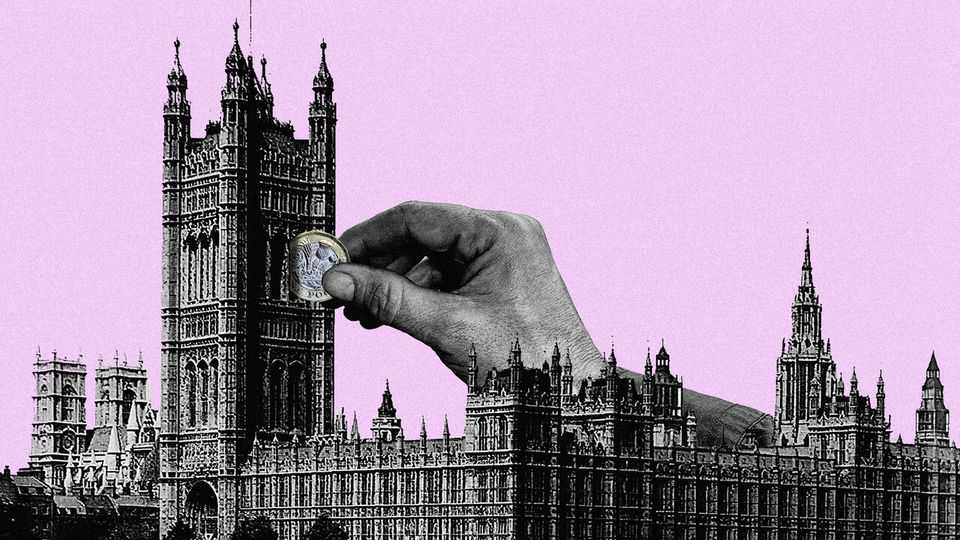

There is too little money in British politics, not too much
Parties come to office hopelessly unprepared

Sep 17th 2026
Nobody could mistake Ben Delo or Christopher Harborne for saints. Both made fortunes in cryptocurrencies. In 2022 Mr Delo was convicted in America of failing to implement money-laundering controls—and later pardoned by President Donald Trump. Both are keener on Reform uk, a populist right-wing party led by Nigel Farage, than any sensible person should be. Yet, by promising unheard-of quantities of money to Reform, both have done their country a good turn.
Their donations, each of £36m ($48m), have caused a tizzy in Westminster. Other parties are crying corruption and threatening to block the gifts. Parliament had already been considering proposals to cap donations at £100,000 per person per year. Any new rules could be made retroactive, forcing Reform to return most of the dosh.
The worriers make three intertwined arguments. They claim that Reform habitually bends and even breaks the rules; that the cash gives the party an unfair advantage; and that big money harms politics. Only one of these claims holds water.
The whiff of impropriety around Reform is real. In early September the party suspended two senior figures after they were filmed apparently encouraging a would-be donor to break the rules on giving. Mr Farage was filmed slurping down oysters while others discussed the rule-breaking. (He insists he was not listening properly, which is hardly much of a defence.) Parliament and the police are investigating other donations.
Rules must be followed, including those on donations from abroad. But people who care about the health of British politics should not try to restrict the flow of legal money into it. Britain suffers not from an excess of political donations, but from a severe lack of them.
One reason not to block money is that, after a certain point, cash cannot simply buy victory in elections. And even if it could, restrictions on campaign spending in Britain are a leveller. In the case of Reform, the windfall could grow poisonous as factions already at war within the party struggle for a share of the spoils.
The other reason is that British politics needs money. Last year the Donkey Sanctuary, a charity in Devon that cares for down-on-their-luck equines, received more than every major political party combined. So did the Royal Opera House. Or compare Britain with America. Reform’s £72m windfall is worth less than the money spent on this year’s Republican Senate primary election in Texas.
Impoverished British parties are barely able to prepare for power. The victor of a general election wins control of more than £1.3trn in public spending; those vying for this prize do so on a shoestring. Most shadow ministers rely on teams of two or three staffers to put together a programme for government. Reform boasts that it will use its new infusion of cash to double the number of policy researchers it has—to a grand total of 20. If so, it would be a start.
Although British voters prefer the asses in Devon to the asses in Westminster, their blanket cynicism about politics is unwarranted. Britons seem to assume that any donation must be corrupt, because why else would the donor hand over their cash? But if giving to political parties is stigmatised as spivvy, only spivs will give. Politics would benefit from a wider pool of public-spirited donors to fund the lawyers and wonks who prepare parties for office.
Restricting donations would make this problem worse. And doing so retroactively would discredit the rule of law. When Parliament has previously made past actions unlawful, it was to pursue elderly Nazis and Yugoslav war criminals. Turning the election rulebook into a tool for the establishment to keep insurgents out really would be a gift to Mr Farage.
If you are an opponent of Reform, you should shun the donkeys this year and pick the party you want to win. Instead of reaching for the statute book, with one hand hold your nose and with the other reach for your chequebook. ■